Contents
clearvars
close all
clc
Zadatak 1А: Snimanje odziva sistema na step promenu upravljanja oko nominalne radne tačke.
u_step_vent = 3;
t_step_vent = 200;
t_step_nom = 15;
u_nom_vent = 6;
u_nom_temp = 4.5;
sim_step = 0.01;
load("izlazna_merenja.mat")
t_sim = out.y_out_vent.Time;
t_end = t_sim(end);
y_vent = out.y_out_vent.Data;
u_vent = out.u_out_vent.Data;
y_filt_vent = doFilter(y_vent, 0.985);
figure(1)
plot(t_sim,y_vent, 'Color','r'); hold all;
plot(t_sim,y_filt_vent, 'Color','blue');
plot(t_sim,u_vent, 'Color','black', LineStyle='--')
xlim([180 220]);
ylim([4 9.5]);
grid on
xlabel("Vreme [s]");
ylabel("Protok vazduha u tunelu [V]")
legend("Nefiltrirano merenje", "Filtrirano merenje", "Upravljanje",...
'Location','northwest')
title(["Prikaz zadate sekvence upravljanja"; "i odziva sistema (STEP pobuda)"])
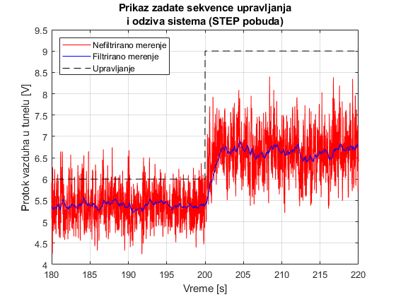
Zadatak 1B: Određivanje First Order plus Dead Time (FOPDT )aproksimacije sistema.
y_0 = mean(y_filt_vent(t_sim < 200));
y_end = mean(y_filt_vent(t_sim>210));
u_0 = u_nom_vent;
u_end = u_nom_vent + u_step_vent;
delta_y = y_end - y_0;
delta_u = u_end - u_0;
Kp = delta_y/delta_u;
y_63 = y_0 + delta_y*0.63;
t_0 = find(t_sim > 200, 1, 'first');
t_63 = find(y_filt_vent(t_0:end) > y_63, 1, 'first');
t_63 = t_0 + t_63;
t_63 = t_sim(t_63) - t_sim(t_0);
s = tf('s');
G_fopdt = Kp/(s*t_63 + 1);
T_samp = t_63/20;
figure(2)
u_model = u_step_vent * ones(length(y_filt_vent(t_0:end)), 1);
y_model = lsim(G_fopdt,u_model,t_sim(t_0:end));
plot(t_sim(t_0:end), y_model + y_0, "Color","blue", linewidth = 1.2); hold all
plot(t_sim(t_0:end), y_filt_vent(t_0:end), "Color","red")
grid on;
xlim([200 t_end]);
xlabel("Vreme [s]");
ylabel("Protok vazduha u tunelu [V]")
legend("Odziv FOPDT modela", "Filtriran odziv merenja",...
'Location','southeast')
title(" Poređenje odziva filtriranog merenja i FOPDT modela")
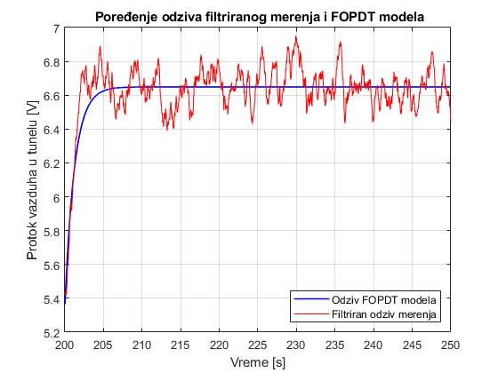
Zadatak 1C: Pododabiranje merenja procenjenom periodom odabiranja.
clc
T_samp = t_63/20;
t_resampled = 0:T_samp:t_sim(end);
N_resampled = ceil(length(y_filt_vent)/length(t_resampled));
y_resampled = y_filt_vent(1:N_resampled:end);
t_resampled = t_sim(1:N_resampled:end);
u_resampled= u_vent(1:N_resampled:end);
T_samp = t_resampled(2) - t_resampled(1);
figure
plot(t_sim, y_filt_vent,'Color', 'blue'); hold all
plot(t_resampled, y_resampled, 'Color', 'magenta', Marker='*');
xlim([150, 152]);
ylim([5.3, 5.7]);
xlabel("Vreme [s]");
ylabel("Protok vazduha u tunelu [V]")
legend("Snimljeno u 25001 tačaka", "Pododabiranje sa 3572 tačaka",...
'Location','northeast')
title("Zumirani prikaz filtriranih merenja pre i nakon pododabiranja")
grid on;
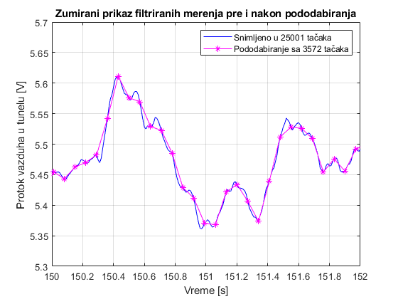
Zadatak 1D: Nalaženje ARX1 modela diskretizacijom FOPDT aproksimacije sistema.
a1 = exp(pole(G_fopdt)*T_samp);
z = tf('z', T_samp);
G_fopdt_arx1 = Kp*(1-a1)/(z - a1);
y_model = lsim(u_resampled,G_fopdt,t_resampled);
y_model_arx1 = lsim(u_resampled,G_fopdt_arx1,t_resampled);
figure
subplot(2,1,1)
plot(t_resampled,y_model,LineWidth=1.2,LineStyle="--", Color='r'); hold all
stairs(t_resampled,y_model_arx1,LineWidth=1, Color='blue');
xlim([200 210]);
ylabel("Protok vazduha u tunelu [V]")
title("Uticaj diskretizacije na aproksimaciju prvog reda")
grid on;
legend("Kontinualni FOPDT model", "ARX1 model", 'Location','southeast')
subplot(2,1,2)
plot(t_resampled,y_model,LineWidth=1.2,LineStyle="--", Color='r'); hold all
stairs(t_resampled,y_model_arx1,LineWidth=1, Color='blue');
xlim([200 201]);
ylabel("Protok vazduha u tunelu [V]")
xlabel("Vreme [s]")
xlabel("")
grid on;
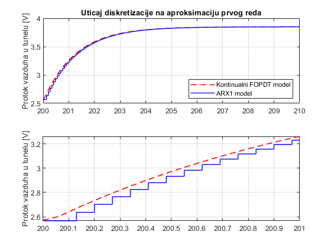
Zadatak 2А: Snimanje odziva na pobudne signale velikog reda perzistencije.
Pseudonasumična binarna sekvenca (PRBS)
T_prekidanje = 5;
N_reg = 10;
u_max = 3;
t_end = 400;
t_prbs = 250;
load("PRBS_merenje.mat");
figure
plot(t_prbs_vent,u_prbs_vent, Color='black', LineStyle="--"); hold all
plot(t_prbs_vent,y_prbs_vent, Color='r', LineWidth=1.2);
grid on;
ylabel("Protok vazduha u tunelu [V]")
ylim([4.5 9.5])
xlabel("Vreme [s]")
title(["Prikaz zadate sekvence upravljanja"; "i odziva sistema (PRBS pobuda)"])
legend(["Upravljačka sekvenca", "Odziv sistema"], 'Location', 'northwest')
figure
plot(t_prbs_temp,u_prbs_temp, Color='black', LineStyle="--"); hold all
plot(t_prbs_temp,y_prbs_temp, Color='r', LineWidth=1.2);
grid on;
ylabel("Temperatura vazduha u tunelu [V]")
ylim([2.5 5])
xlabel("Vreme [s]")
title("Odziv temperature na zadato nominalno upravljanje")
legend(["Nominalno upravljanje", "Odziv sistema"], 'Location', 'northwest')
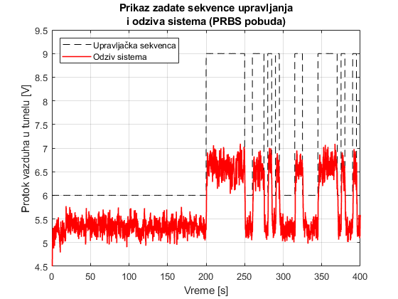 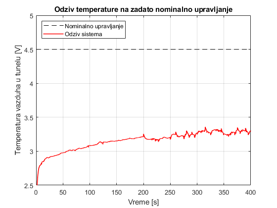
Bipolarna povorka (BP)
T_prekidanje = 10;
u_max = 3;
t_end = 400;
t_bp = 250;
load('BP_merenje.mat')
figure
plot(t_bp_vent,u_bp_vent, Color='black', LineStyle="--"); hold all
plot(t_bp_vent,y_bp_vent, Color='r', LineWidth=1.2);
grid on;
ylabel("Protok vazduha u tunelu [V]")
ylim([4.5 9.5])
xlabel("Vreme [s]")
title(["Prikaz zadate sekvence upravljanja"; "i odziva sistema (BIPOLARNA pobuda)"])
legend(["Upravljačka sekvenca", "Odziv sistema"], 'Location', 'northwest')
figure
plot(t_bp_temp,u_bp_temp, Color='black', LineStyle="--"); hold all
plot(t_bp_temp,y_bp_temp, Color='r', LineWidth=1.2);
grid on;
ylabel("Temperatura vazduha u tunelu [V]")
ylim([2.5 5])
xlabel("Vreme [s]")
title("Odziv temperature na zadato nominalno upravljanje")
legend(["Nominalno upravljanje", "Odziv sistema"], 'Location', 'northwest')
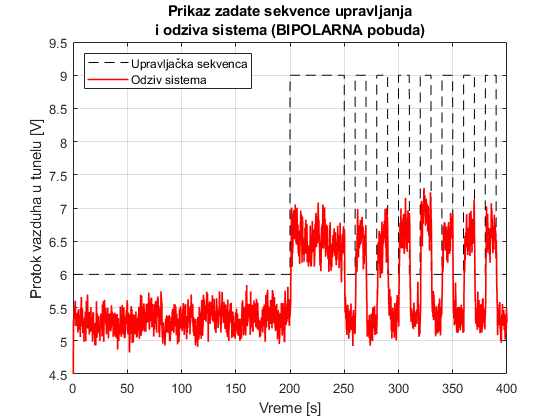 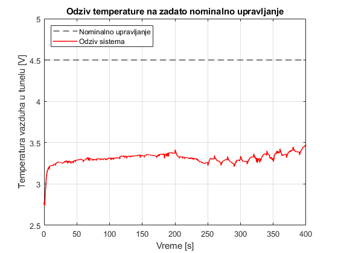
Zadatak 2B: Priprema snimljenih podataka za proces identifikacije
load("PRBS_merenje.mat");
load("BP_merenje.mat");
t_180 = find(t_prbs_vent>180,1,'first');
t_prbs_vent = t_prbs_vent(t_180:end);
y_prbs_vent = y_prbs_vent(t_180:end);
u_prbs_vent = u_prbs_vent(t_180:end);
t_180 = find(t_bp_vent>180,1,'first');
t_bp_vent = t_bp_vent(t_180:end);
y_bp_vent = y_bp_vent(t_180:end);
u_bp_vent = u_bp_vent(t_180:end);
y_bp_vent = y_bp_vent - mean(y_bp_vent);
u_bp_vent = u_bp_vent - mean(u_bp_vent);
y_prbs_vent = y_prbs_vent - mean(y_prbs_vent);
u_prbs_vent = u_prbs_vent - mean(u_prbs_vent);
t_220 = find(t_prbs_vent>220,1,'first');
tau = length(1:t_220)/2;
rxy_prbs = kroskorelacija(y_prbs_vent(1:t_220),u_prbs_vent(1:t_220),tau);
rxy_bp = kroskorelacija(y_bp_vent(1:t_220),u_bp_vent(1:t_220),tau);
tau_arr = -tau:tau;
tau_max_prbs = tau_arr(find(rxy_prbs==max(rxy_prbs),1,'first'));
tau_max_bp = tau_arr(find(rxy_bp==max(rxy_bp),1,'first'));
figure
subplot(2,1,1)
plot(t_prbs_vent(1:t_220),u_prbs_vent(1:t_220),LineStyle="--",Color="black"); hold all
plot(t_prbs_vent(1:t_220),y_prbs_vent(1:t_220),Color="blue");
grid on
xlim([180 220])
xlabel("Vreme [s]");
ylabel("Protok vazduha u tunelu [V]")
title(["Ocena transportnog kašnjenja na osnovu kroskorelacije";"(pre PRBS pobude)"])
subplot(2,1,2)
plot(tau_arr, rxy_prbs, Color="blue");
grid on
xlabel("Kašnjenje [odb]");
ylabel("Kroskorelacija ulaz / izlaz");
xlim([-100 100])
ylim([0.4 1])
text(40,1.1,strcat("Kašnjenje [s] = ", num2str(tau_max_prbs*T_samp)))
figure
subplot(2,1,1)
plot(t_bp_vent(1:t_220),u_bp_vent(1:t_220),LineStyle="--",Color="black"); hold all
plot(t_bp_vent(1:t_220),y_bp_vent(1:t_220),Color="blue");
grid on
xlim([180 220])
xlabel("Vreme [s]");
ylabel("Protok vazduha u tunelu [V]")
title(["Ocena transportnog kašnjenja na osnovu kroskorelacije";"(pre BP pobude)"])
subplot(2,1,2)
plot(tau_arr, rxy_bp, Color="blue");
grid on
xlabel("Kašnjenje [odb]");
ylabel("Kroskorelacija ulaz / izlaz");
xlim([-100 100])
ylim([0.4 0.9])
text(40,0.98,strcat("Kašnjenje [s] = ", num2str(tau_max_bp*T_samp)))
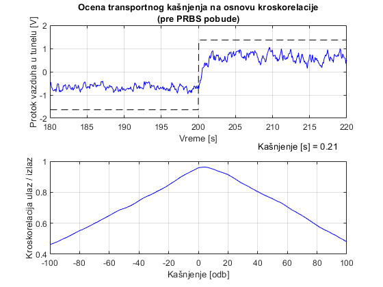 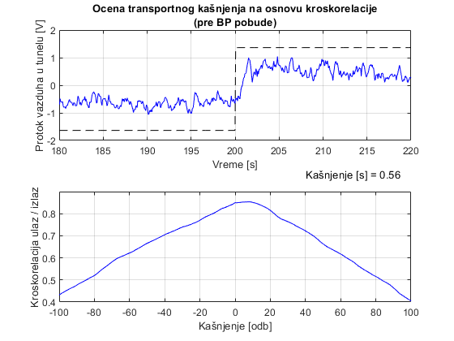
y_prbs_id = y_prbs_vent(tau_max_prbs:end);
u_prbs_id = u_prbs_vent(1:end-tau_max_prbs+1);
y_bp_id = y_bp_vent(tau_max_bp:end);
u_bp_id = u_bp_vent(1:end-tau_max_bp+1);
t_prbs_id = t_prbs_vent(1:end-tau_max_prbs+1);
t_bp_id = t_bp_vent(1:end-tau_max_bp+1);
id_data_prbs = iddata(y_prbs_id,u_prbs_id,T_samp);
id_data_bp = iddata(y_bp_id,u_bp_id,T_samp);
figure
subplot(2,1,1)
plot(t_prbs_id,u_prbs_id,LineStyle="--",Color="black"); hold all
plot(t_prbs_id,y_prbs_id,Color="blue");
xlim([t_prbs_id(1) t_prbs_id(end)])
ylim([-2 3])
grid on
ylabel("Protok vazduha u tunelu [V]")
legend(["Upravljačka sekvenca (PRBS)", "Odziv sistema"], 'Location', 'northwest')
title("Konačne vremenske serije podataka za identifikaciju")
subplot(2,1,2)
plot(t_bp_id,u_bp_id,LineStyle="--",Color="black"); hold all
plot(t_bp_id,y_bp_id,Color="blue");
xlim([t_prbs_id(1) t_prbs_id(end)])
ylim([-2 3])
grid on
ylabel("Protok vazduha u tunelu [V]")
legend(["Upravljačka sekvenca (BP)", "Odziv sistema"], 'Location', 'northwest')
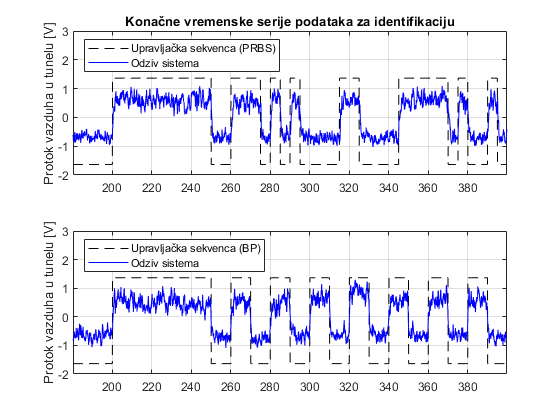